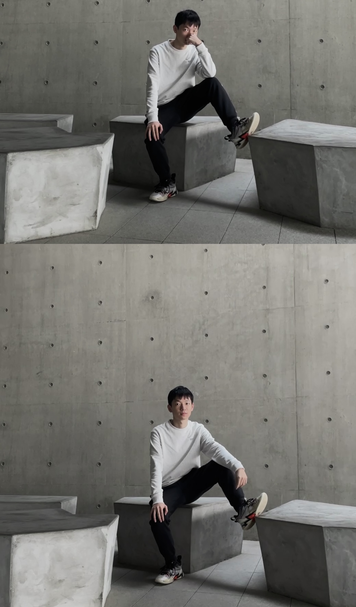

|
Zhuo Chen (陈卓)
Ph.D. Student
Zhejiang University
Email: zhuo.chen@zju.edu.cn
[Google Scholar]
|

|
Short Bio
I am now a third-year Ph.D. student in Computer Science at Zhejiang University, supervised by Prof. Huajun Chen. My research interest is broadly in knowledge graphs (KGs), especially KG-driven Multi-modal Learning and Low-resource Learning.
My current research interests lie in the exploration of the integration of **knowledge into Multi-modal Learning** or the incorporation of Multi-modal Learning into the representation of knowledge. This exciting area of research holds great potential for advancing our understanding of how knowledge graphs can be leveraged to enhance Multi-modal Learning, and vice versa.
Preprints
-
Generalizing to Unseen Elements: A Survey on Knowledge Extrapolation for Knowledge Graphs
Mingyang Chen, Wen Zhang, Yuxia Geng, Zezhong Xu, Jeff Z. Pan, Huajun Chen
Under Review
[paper]
-
Tele-Knowledge Pre-training for Fault Analysis
Zhuo Chen, Wen Zhang, Yufeng Huang, Mingyang Chen, Yuxia Geng, Hongtao Yu, Zhen Bi, Yichi Zhang, Zhen Yao, Wenting Song, Xinliang Wu, Yi Yang, Song Jiang, Zhaoyang Lian, Yingying Li, Huajun Chen
Under Review
[paper]
-
Structure Pre-training and Prompt Tuning for Knowledge Graph Transfer
Wen Zhang, Yushan Zhu, Mingyang Chen, Yuxia Geng, Yufeng Huang, Yajing Xu, Wenting Song and Huajun Chen
WWW 2023
-
Relational Message Passing for Fully Inductive Knowledge Graph Completion
Yuxia Geng, Jiaoyan Chen, Wen Zhang, Jeff Z. Pan, Mingyang Chen, Huajun Chen, Song Jiang
ICDE 2023
[paper]
-
Analogical Inference Enhanced Knowledge Graph Embedding
Yao Zhen, Zhang Wen, Mingyang Chen, Yufeng Huang, Yi Yang, Huajun Chen
AAAI 2023
[paper]
-
Entity-Agnostic Representation Learning for Parameter-Efficient
Mingyang Chen, Wen Zhang, Zhen Yao, Yushan Zhu, Yang Gao, Jeff Z. Pan, Huajun Chen
AAAI 2023
[paper]
-
Federated Knowledge Graph Completion via Embedding-Contrastive Learning
Mingyang Chen, Wen Zhang, Zonggang Yuan, Yantao Jia, Huajun Chen
Knowledge-Based Systems 2022
[paper]
-
Understanding and Improving Knowledge Graph Embedding for Entity Alignment
Lingbing Guo, Qiang Zhang, Zequn Sun, Mingyang Chen, Wei Hu, Huajun Chen
ICML 2022
[paper][code]
-
Meta-Learning Based Knowledge Extrapolation for Knowledge Graphs in the Federated Setting
Mingyang Chen, Wen Zhang, Zhen Yao, Xiangnan Chen, Mengxiao Ding, Fei Huang, Huajun Chen
IJCAI 2022
[paper][code]
-
Meta-Knowledge Transfer for Inductive Knowledge Graph Embedding
Mingyang Chen, Wen Zhang, Yushan Zhu, Hongting Zhou, Zonggang Yuan, Changliang Xu, Huajun Chen
SIGIR 2022
[paper][code]
-
NeuralKG: An Open Source Library for Diverse Representation Learning of Knowledge Graphs
Wen Zhang, Xiangnan Chen, Zhen Yao, Mingyang Chen, Yushan Zhu, Hongtao Yu, Yufeng Huang, Zezhong Xu, Yajing Xu, Ningyu Zhang, Zonggang Yuan, Feiyu Xiong, Huajun Chen
SIGIR 2022
[paper][code][website]
-
DualDE: Dually Distilling Knowledge Graph Embedding for Faster and Cheaper Reasoning
Yushan Zhu, Wen Zhang, Mingyang Chen, Hui Chen, Xu Cheng, Wei Zhang, Huajun Chen
WSDM 2022
[paper]
-
Knowledge Graph Embedding in E-commerce Applications: Attentive Reasoning, Explanations, and Transferable Rules
Wen Zhang, Shumin Deng, Mingyang Chen, Liang Wang, Qiang Chen, Feiyu Xiong, Xiangwen Liu, Huajun Chen
IJCKG 2021
[paper]
-
FedE: Embedding Knowledge Graphs in Federated Setting
Mingyang Chen, Wen Zhang, Zonggang Yuan, Yantao Jia, Huajun Chen
IJCKG 2021 (Best Paper Award)
[paper][code]
-
Meta Relational Learning for Few-Shot Link Prediction in Knowledge Graphs
Mingyang Chen, Wen Zhang, Wei Zhang, Qiang Chen, Huajun Chen
EMNLP 2019
[paper][code]